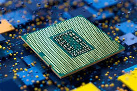
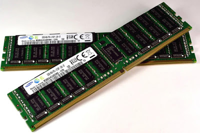
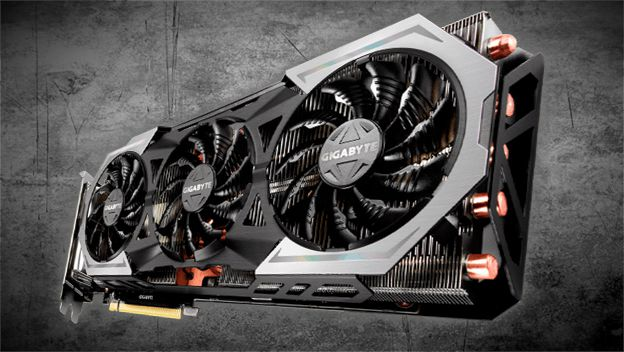

CPU (Processor)
Jan 12, 2021 Views : 6,487,497CPU adalah otak komputer yang mengatur semua proses. Semakin tinggi performanya, semakin cepat komputer bekerja.
Read more
RAM (Random Acces Memory)
Feb 12, 2021 Views : 7,487,497RAM menyimpan data sementara agar aplikasi berjalan lebih cepat dan lancar.
Read more
GPU
Jun 12, 2021 Views : 4,487,497GPU berfungsi untuk mengolah grafis, penting untuk gaming, desain, dan editing video.
Read more